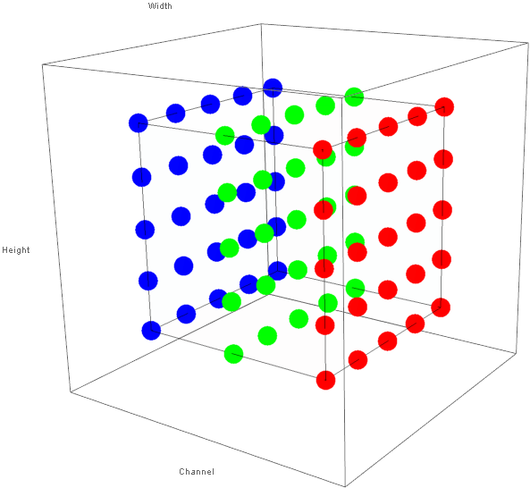
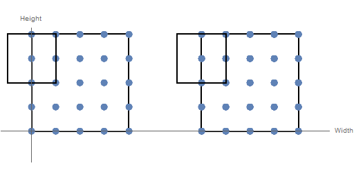
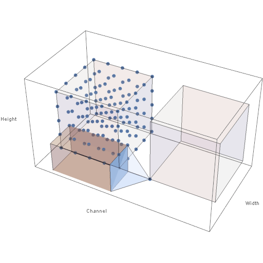
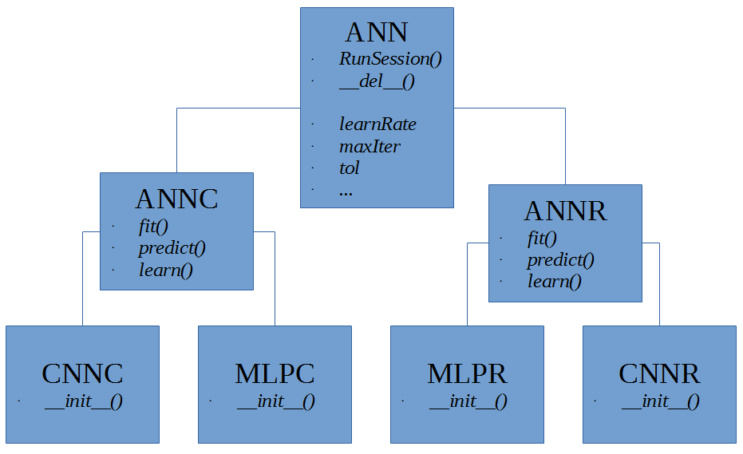
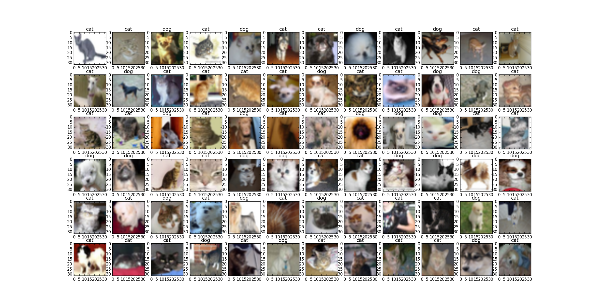

Image Classification Using Convolutional Neural Networks
Sun, 02 Apr 2017
Classification, Cnn, Computer Science, Computer Vision, Machine Learning, Neural Networks, Python, Tensorflow
This blog post introduces a type of neural network called a convolutional neural network (CNN) using Python and TensorFlow. A brief introduction to CNNs is given and a helper class for building CNNs in Python and TensorFlow is provided. The source code from this post is available here on GitHub.Motivation for CNNs
Past blog posts have explored multi-layer perceptron (MLP) networks. Recall from this post, that multi-layer perceptrons (MLPs) are fully-connected. Thus, in an MLP, a neuron in layer \(i\) is connected to all neurons in layer \(i + 1\). An example of an MLP network is shown below in Figure 1.
Figure 1: A Multi-Layer Perceptron Network
Fully-connected layers are reasonable for networks with relatively few neurons in each layer, but not so for networks having many neurons in each layer. For example, consider a network which is trained on image data. Images are typically stored as an \(m \times n \times 3\) matrix of pixel values, where the three \(m \times n\) matrices corresponds to the red, green, and blue channels respectively. If the first hidden layer of the network has \(h\) neurons then the number of weights in the first weight matrix is \(3hmn\).
The drawback of the above approach is twofold. First, having a large number of weights results in increased training times as the complexity of the matrix operations involved scales roughly cubically with the layer size (assuming layer sizes differ only by a constant size from each other). Second, the large number of parameters in the model make it prone to overfitting.
If the input data to the network is assumed to be images, some simplifications can be made. The key idea behind convolutional neural networks is that the pixels in images typically have a spatial relationship to each other; each pixel in an image is typically related to other pixels nearby it. For example, in an image of a brown cat, if a pixel is taken from the cat's fur, it is likely that other nearby pixels are also brown. By making this assumption, the amount of weights in the network can be greatly reduced.
The Architecture of CNNs
In addition to the fully-connected layer seen in MLPs, CNNs feature additional types of layers. Two common layers are discussed in this post: the convolutional layer and the pooling layer. Fully-connected layers in CNNs are identical to those seen in MLPs. Convolutional and pooling layers are discussed below in turn.A key difference between MLPs and CNNs is that neurons in the convolutional and pooling layers of a CNN are logically arranged in 3 dimensions. Further, these layers are thought to take as input a 3D matrix of activations and produce a 3D matrix of activations. These 3 dimensions initially correspond to the 3 dimensions of the input image: height, width, and channel (red, green, or blue). Figure 2 below shows the way in which an image (the input to the first layer) is aranged as a 3D grid of activations.

Figure 1: 3D Structure of Activations of Image Data
Subsequent layers in the CNN transform the image into different 3D grids of neuron activations. Neurons receive input only from neurons in a small rectangular volume of the neurons in the previous layer. Though the height and width of the rectangular volume are parameters, neurons always receive input across all channels of the input volume. At fully-connected layers, the input is flattened into a row vector as with MLPs.
The convolutional layer utilizes the assumption that pixels are spatially related to each other by restricting the inputs to which each neuron is connected. A neuron receives input from neurons falling inside a rectangular field across all channels of the input volume. The activation of an individual neuron is the sum (over all channels) of the dot product of the weight matrix with the input matrices. By passing the rectangular filter over the input volume, a 2D matrix of activations is created. The distance between consecutive positions of the filter in a given dimension is a parameter known as the stride. Figure 3 below shows the difference between a stride of 1 (on the left) and 2 (on the right) in the width dimension.

Figure 3: Effect of Different Stride Values
The process of passing the filter over the input is repeated for \(f\) times, where the parameter \(f\) is the number of different filters that are used for the particular convolutional layer. The results of each of these \(f\) iterations (each producing a 2D matrix) are concatenated to form a 3D matrix. Thus, each filter produces its own channel in the output volume.
Figure 4 below shows the way in which the output volume of neuron activations is computed. In the animation below, both the input and output volumes are of size \(5 \times 5 \times 5\), the filter size is of size \(3 \times 3\), and the stride is 1 in all dimensions.

Figure 4: Sliding Filter of a Convolutional Layer
Note in the animation that when the filter extends beyond the bounds of the input volume, the out-of-bounds values are taken (typically) to be 0. This is known as padding. In practice, the input is typically padded with zeros so that the height and width of the input volume are preserved across a convolutional layer. Also, note that the height and width of the output volume are determined by the height and width of the input volume, the filter size, the amount of padding, and the stride values. The depth of the output volume, however, is an arbitrary parameter and is not affected by the depth of the input volume.
The second new type of layer is the pooling layer. Similar to convolutional layers, the cells in the output volume produced by pooling layers are computed by passing a rectangular window over the input volume. However, instead of computing dot products, only a single value in the window is selected. This is a form of downsampling. With max pooling, only the maximum value in the window is preserved and the remaining values are discarded. For example, if the filter was of size \(2 \times 2\) and contained the following values:
\[\displaylines{\begin{bmatrix} 0.154 & 0.654\\ 0.111 & 0.321\\ \end{bmatrix} }\]
the max value of 0.654 would be preserved and the remaining 3 values would be discarded. This downsampling reduces the dimensionality of the problem without losing too much information. The main reason this loss of data is acceptable is that it was assumed that pixels are related to other nearby pixels. Note that there are no weights in a pooling layer; the pool function is simply applied to the output volume of the previous layer and the resulting volume is passed to the next layer.
After the data has been filtered and downsampled in some sequence of convolution and pooling layers it can be distilled into some output vector \(\textbf{yh}\) using one or more fully-connected layers. This is accomplished by flattening the output volume into a single row vector and applying the familiar steps of an MLP network.
A TensorFlow CNN Python Class
The TFMLP file that was introduced in a past blog post is extended to support CNNs. Now that the module suports both MLPs and CNNs, it has been renamed to TFANN (short for TensorFlow Artificial Neural Networks). To promote code reuse, a base artificial neural network (ANN) class is created from which the MLP and CNN classes inherit. A simple class diagram showing the classes in the TFANN module is shown below in Figure 5.
Figure 5: TFANN Class Diagram
The ANN class provides functionality for maintaining a TensorFlow session and contains data members that are used in all ANN subclasses. The ANNC and ANNR subclasses correspond to neural networks that are used for classification and regression respectively. These subclasses provide functions that are used for fitting, scoring, and predicting with the neural network models, regardless of their actual architecture (CNN, MLP, etc). The leaf classes actual implement the specific neural network architecture by populating the TensorFlow graph with operations to perform the network's functionalities. Note: The refactored MLPR and MLPC classes should work identically as those of past versions.
Of specific interest to this post is the CNNC class. The name CNNC is short for Convolutional Neural Network for Classification. The majority of the functionality for the class is identical to that of the MLPC class. The major difference is in the _CreateCNN function.
#Sets up the graph for a convolutional neural network
#from a list of specifications of the form:
#[('C', [5, 5, 3, 64], [1, 1, 1, 1]), ('P', [1, 3, 3, 1], [1, 2, 2, 1]),('F', 10),]
#Where 'C' denotes a covolution layer, 'P' denotes a pooling layer, and 'F' denotes
#a fully-connected layer.
def _CreateCNN(self, ws):
self.W = []
self.B = []
YH = self.X
for i, wsi in enumerate(ws):
if wsi[0] == 'C': #Convolutional layer
self.W.append(tf.Variable(tf.truncated_normal(wsi[1], stddev = 5e-2)))
self.B.append(tf.Variable(tf.constant(0.0, shape = [wsi[1][-1]])))
YH = tf.nn.conv2d(YH, self.W[-1], wsi[2], padding = self.pad)
YH = tf.nn.bias_add(YH, self.B[-1])
YH = self.AF(YH) #Apply the activation function to the output
elif wsi[0] == 'P': #Pooling layer
YH = tf.nn.max_pool(YH, ksize = wsi[1], strides = wsi[2], padding = self.pad)
YH = tf.nn.lrn(YH, 4, bias=1.0, alpha = 0.001 / 9.0, beta = 0.75)
elif wsi[0] == 'F': #Fully-connected layer
#Flatten volume of previous layer for fully-connected layer
yhs = YH.get_shape()
lls = 1
for i in yhs[1:]:
lls *= i.value
YH = tf.reshape(YH, [-1, lls])
self.W.append(tf.Variable(tf.truncated_normal([lls, wsi[1]], stddev = 0.04)))
self.B.append(tf.Variable(tf.constant(0.1, shape = [wsi[1]])))
YH = tf.matmul(YH, self.W[-1]) + self.B[-1]
if i + 1 != len(ws): #Last layer shouldn't apply activation function
YH = self.AF(YH)
return YHThe above function creates the CNN based on a list of tuples which specify both the type of layer and parameters for the layer. In the above code, 'C' denotes a convolutional layer, 'P' denotes a pooling layer, and 'F' denotes a fully-connected layer.
For convolutional layers, the 2nd member of the tuple corresponds to the filter size and is of the form: [filterWidth, filterHeight, inChannels, outChannels]. The first three values determine the size of the rectangular solid (the receptive field) to which neurons are connected. The above discussion assumed that inChannels is equal to the full depth of the input volume. The final value determine the number of filters that are used (recall that this was arbitrary). The 3rd member of the tuple corresponds to the stride values for the filter for each of the 4 dimensions of the input data: [batchSize, height, width, channel]. Stride values determine the space between two filter positions as it passes over the input volume.
In the case of pooling layers, the 2nd member of the tuple corresponds to the filter size from which the max value is selected and is of the form: [batch, height, width, channel]. The 3rd member of the tuple corresponds to the stride value for each dimension and is of the form: [batch, height, width, channel]. The fully connected layers only require 1 parameter: the number of neurons in the layer.
With the above function and inheritance hierarchy, the actual implementation of the CNNC class is quite brief. As seen below, the sum of the softmax cross entropy is taken as the loss function along with optional L2 regularization.
#Convolutional Neural Network for Classification
class CNNC(ANNC):
#imageSize: Size of the images used (Height, Width, Depth)
#ws: Weight matrix sizes
def __init__(self, imageSize, ws, actvFn = 'relu', batchSize = None, learnRate = 1e-4, maxIter = 1000,
optmzr = 'adam', pad = 'SAME', tol = 1e-1, reg = None, verbose = False):
#Initialize fields from base class
super().__init__(actvFn, batchSize, learnRate, maxIter, optmzr, reg, tol, verbose)
#Input placeholder
self.imgSize = list(imageSize)
self.X = tf.placeholder("float", [None] + self.imgSize)
#Padding method to use
self.pad = pad
#Target vector placeholder; final layer should be a fully connected layer
self.Y = tf.placeholder("float", [None, ws[-1][1]])
#Create neural network graph and keep track of output variable
self.YH = self._CreateCNN(ws)
#Loss term
self.loss = tf.reduce_sum(tf.nn.softmax_cross_entropy_with_logits(self.YH, self.Y))
#Use regularization to prevent over-fitting
self.reg = reg
if(reg is not None):
self.loss += _CreateL2Reg(self.W, self.B) * reg
self.optmzr = _GetOptimizer(optmzr, learnRate).minimize(self.loss)
#Begin the TensorFlow Session
self.RunSession()A Brief Test
Next, a brief example using the CNNC class is created using the CIFAR-10 dataset. The dataset is available here on Kaggle. CIFAR 10 is a classic data set used for object recognition that consists of 60,000 \(32 \times 32\) images divided into 10 classes (cat, dog, car, airplane, etc.). This example will train a CNN to classify an image as either containing a cat or a dog. The code that follows assumes the train.7z file has been extracted into a folder train/ and the current directory contains the trainLabels.csv file.First, the training labels file is scanned and only images from the classes cat or dog are retained. Then, 2048 random file names are selected from this number to form the training set. Next, the images are read into memory and the target vectors are formed. The target vectors are simple 2 component vectors that contain a single 1 and 0 determining if the target class is "cat" or "dog." The images are read using the skimage library.
from TFMLP import CNNC
import numpy as np
import os
import matplotlib.pyplot as mpl
from skimage.io import imread
from skimage import img_as_float
from sklearn.model_selection import KFold
from random import sample
#The maximum number of images to use
maxImg = 2048
#Path to directory with CIFAR-10 images
p = 'train/'
labs = []
fns = []
with open('trainLabels.csv') as rf:
for line in rf: #Rows of CSV are like: index,label
cnum, clab = line.strip().split(',')
if clab == 'cat' or clab == 'dog':
fns.append(cnum + '.png')
labs.append(clab)
#Take a random sample of the image indices
si = sample(list(range(len(fns))), maxImg)
#File names that were selected
fs = [fns[sij] for sij in si]
#Shape of the data matrix [maxImg x imageWidth x imageHeight x 3]
A = np.zeros([maxImg] + list(imread(os.path.join(p, fns[0])).shape))
for i, fsi in enumerate(fs): #Fill in images converting from 0-255 to 0.0-1.0
A[i] = img_as_float(imread(os.path.join(p, fsi)))
#Numpy array of labels
Y = np.array([labs[sij] for sij in si])Next, a CNNC object is created, fitted to the data, and used to predict labels for the training data. Finally, the first several images are displayed along with their predicted classes.
#Create the CNN
ws = [('C', [5, 5, 3, 64], [1, 1, 1, 1]), ('P', [1, 3, 3, 1], [1, 2, 2, 1]), ('C', [5, 5, 64, 64], [1, 1, 1, 1]), ('P', [1, 3, 3, 1], [1, 2, 2, 1]), ('F', 64), ('F', 16), ('F', 2)]
cnnr = CNNC(A[0].shape, ws, batchSize = 256, maxIter = 5, reg = 5e-2, tol = 7e-2, verbose = True)
#Make a training/testing split
kf = KFold()
trn, tst = next(kf.split(A))
cnnr.fit(A[trn], Y[trn])
#Predict labels for all files
YH = cnnr.predict(A)
#Score the model using the accuracy rating
s1 = cnnr.score(A, Y)
s2 = cnnr.score(A[tst], Y[tst])
s3 = cnnr.score(A[trn], Y[trn])
print(str((s1, s2, s3)))
#Plot the first m x n images in a grid with their predicted labels
m = 6
n = 12
fig, ax = mpl.subplots(m, n)
for i in range(m):
for j in range(n):
ax[i, j].imshow(A[i * n + j])
ax[i, j].set_title(YH[i * n + j])
mpl.show()Of special note in the above code is the specification of the CNN layers in the variable ws. The first layer is a convolutional layer with filter size \(5 \times 5 \times 3\). Notice that the filter extends the full depth of the image. 64 filters are used in this layer resulting in an output volume with depth 64. The stride values in all dimensions are set as 1. This layer is followed by a max-pooling layer with a filter size of height 3 and width 3. The stride along width and depth is set to 2 with the stride along batch size and depth set to 1.
The next layer is a convolutional layer with a filter size of \(5 \times 5 \times 64\). 64 filters are used and the stride in all dimensions is again 1. This is followed by a pooling layer identical to the one above and then by 3 fully-connected layers. The final result is that images are distilled into 2-component row vectors representing the class scores. The CNNC class then converts these row vectors into labels using numpy.argmax and a dictionary.
Results
Figure 6 below shows a sample run of the above code.
Figure 6: CNN Classification Results
Note that even with the reduced number of parameters that CNNs afford, training the network can take a substantial amount of time. This performance can be improved by running training on the GPU using the Cuda-enabled version of TensorFlow.